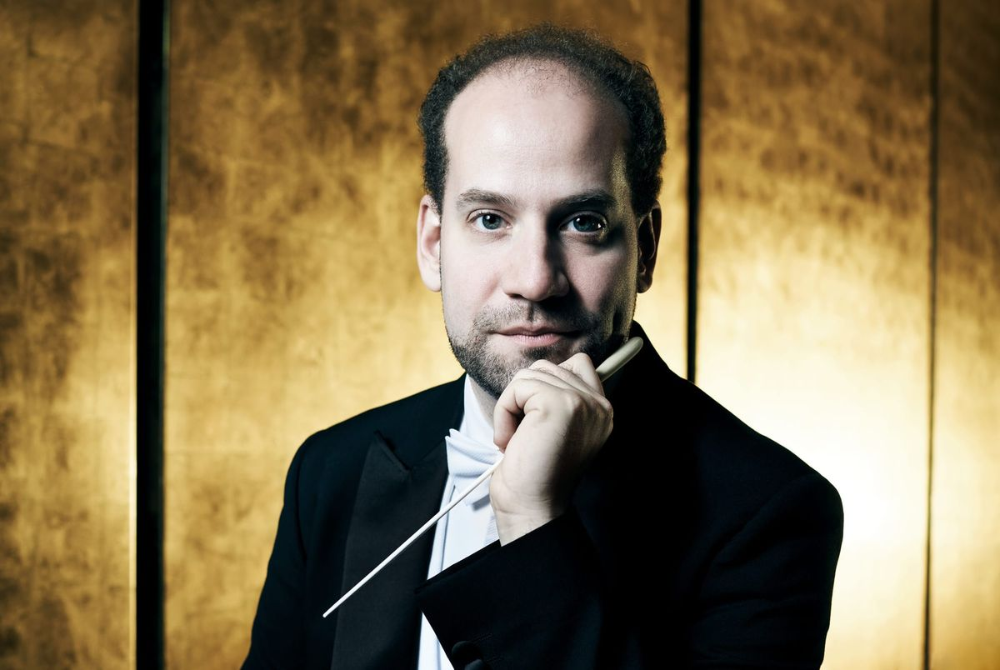
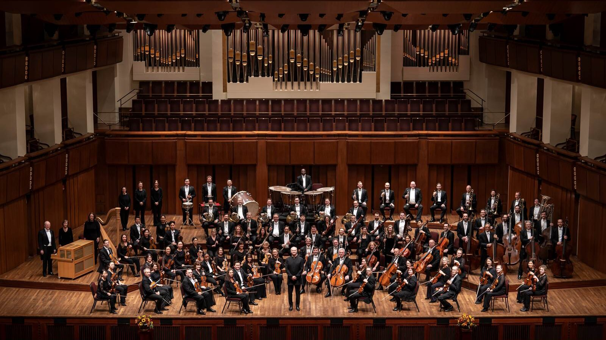

Orchestral Composition & Sound Design
Klänge von
filmischer Eleganz.
Aurora Orchestral ist eine kuratierte Sammlung kurzer Orchesterwerke — von intimen Streichertexturen bis zu weitläufigen, kinoreifen Klanglandschaften. Jedes Stück erzählt eine eigene Geschichte in wenigen Minuten.
Werke entdeckenAusgewählte Werke
Sechs Klangräume
Hören Sie kurze, eigenständige Orchesterstücke. Jede Komposition ist für einen bestimmten emotionalen Raum geschrieben — von stiller Reflexion bis zu dramatischer Auflösung.

Das Studio
Musik mit Raum, Präzision und Charakter
„Ein gutes Orchesterstück entsteht nicht durch Lautstärke, sondern durch die Kunst, Spannung lange genug atmen zu lassen.“
Aurora Orchestral arbeitet mit sorgfältig gewählten Instrumentierungen, klaren harmonischen Bögen und einer Produktion, die jedem Detail Raum gibt. Die Stücke eignen sich für Film, Trailer, Markenfilme, Installationen und konzentriertes Hören.
Die Veröffentlichungen werden regelmäßig erweitert. Für Lizenzanfragen, individuelle Kompositionen oder Arrangements nehmen Sie gerne Kontakt auf.
Kontakt
Lizenzen, Aufträge & Zusammenarbeit
Ob Sie ein vorhandenes Werk lizenzieren möchten oder eine maßgeschneiderte Orchesterkomposition für Ihr Projekt benötigen: Schreiben Sie uns mit einer kurzen Beschreibung Ihres Vorhabens.